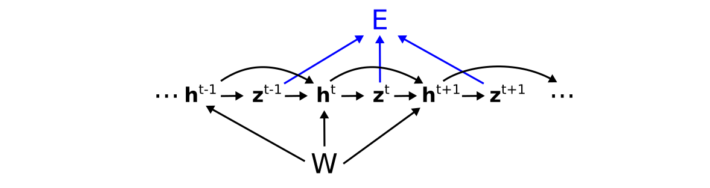
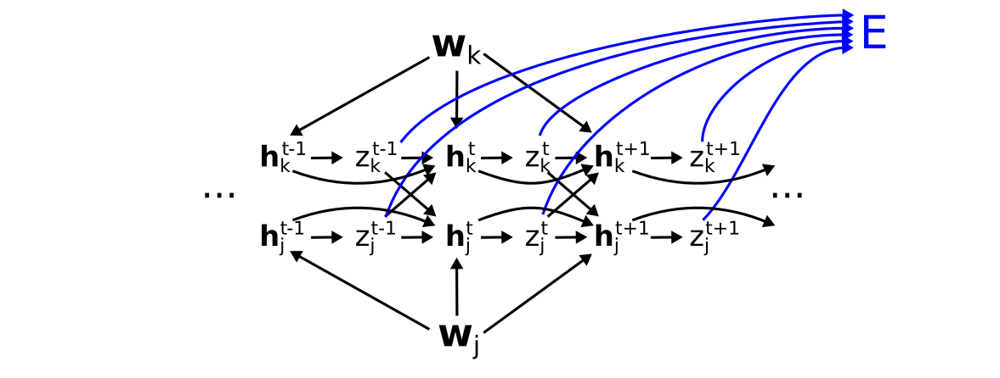
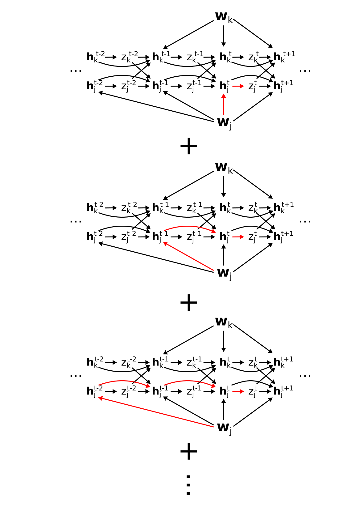
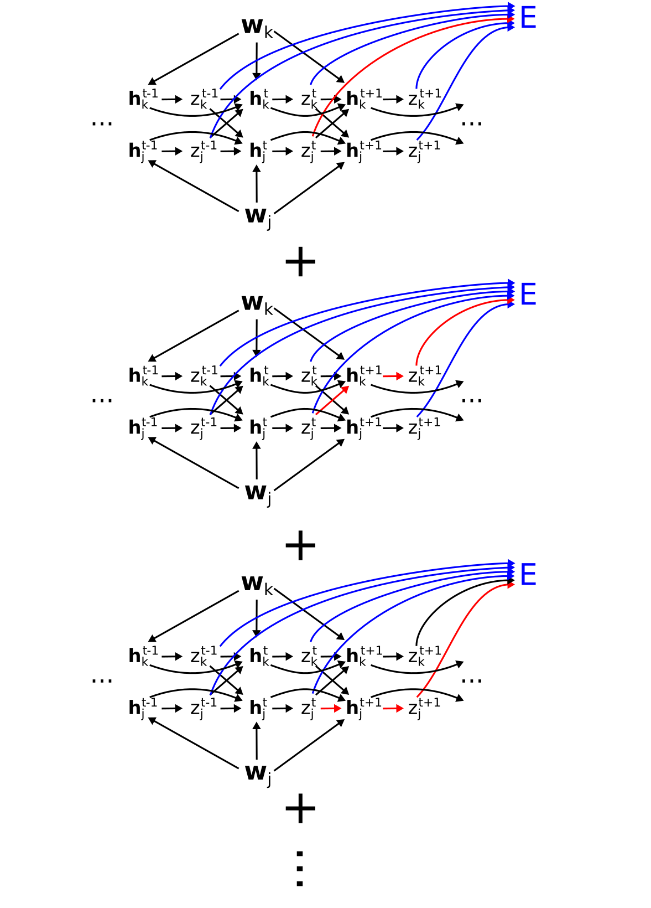
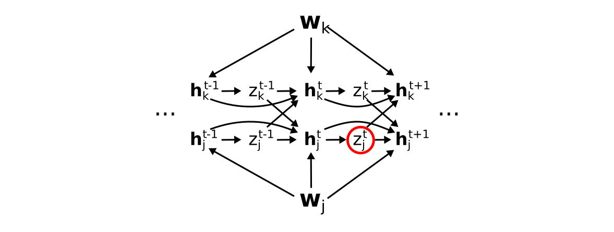
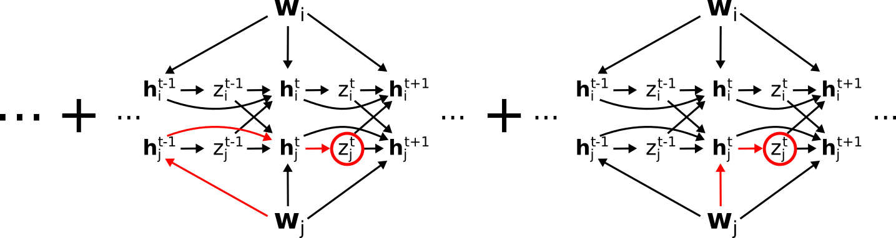
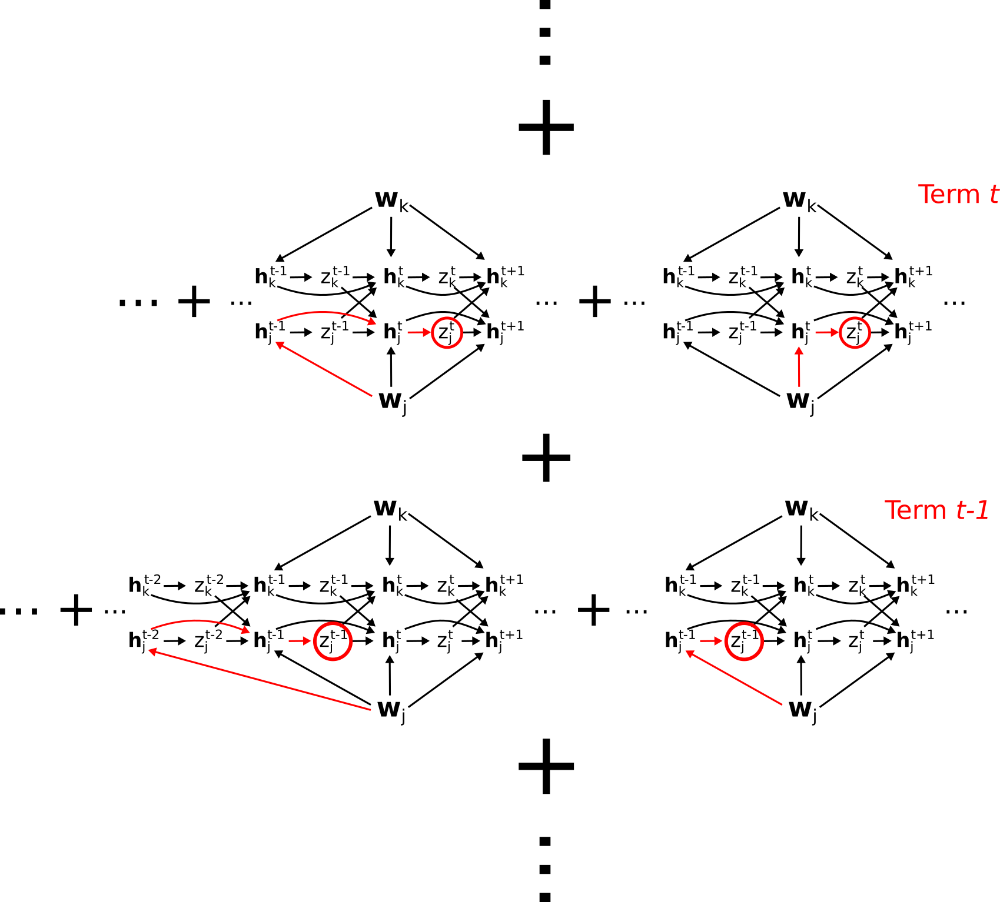
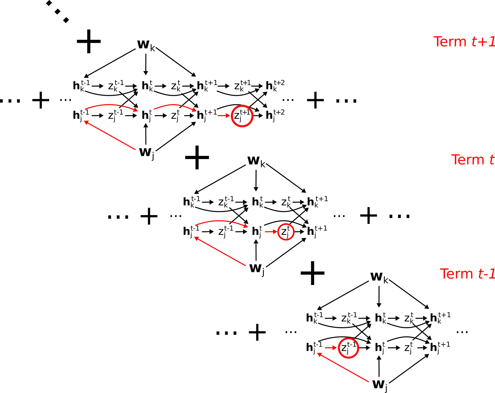

A graphical derivation of e-prop
Rich Pang
2025-11-14
A graphical derivation of the "e-prop" algorithm of Bellec et al 2020. This study showed how a canonical loss gradient for training recurrent neural networks could be factorized in a way that admits implementation by local learning rules.
Recommended preliminary reading: Partial and total derivatives on computation graphs. Note that the notation \(\partial \mathbf{y}/\partial \mathbf{x}\) in Bellec et al, which we will use in this post, corresponds to the Jacobian \(\mathcal{D}_{\mathbf{y}\mathbf{x}}\).
Network model
We start with a recurrent neural network whose \(N\) units have a hidden state (e.g. membrane potential, adaptation state, etc) \(\mathbf{h}^t \in \mathbb{R}^{N\times Q}\) (where Q is the number of hidden state variables per neuron) and an activation (e.g. "firing rate") \(\mathbf{z}^t \in \mathbb{R}^N\), and which evolve in response to inputs \(\mathbf{u}_t\) according to
\[\mathbf{h}^t = \mathbf{h}^t(\mathbf{z}^{t-1}, \mathbf{h}^{t-1}, \mathbf{u}^t; W)\]
\[z_j^t = \phi(\mathbf{h}_j^t)\]
where \(W\) are the network weights and \(\phi\) is a nonlinearity. We let the loss \(E\) (using the notation of Bellec et al) be a function of the neural activations from time \(1\) to \(T\):
\[E = E(\mathbf{z}^1, \dots, \mathbf{z}^T; W).\]
We can represent this with the computation graph

where we have colored the connections from the activations to the loss (and ignored the inputs since we will not differentiate with respect to these), or its expanded version (showing just two neurons for simplicity):

where \(\mathbf{w}_j\) are the synaptic weights onto neuron \(j\).
Exact and approximate e-prop factorization
The exact e-prop factorization of the loss gradient is given by
\[\frac{dE}{dW_{ji}} = \sum_{t=1}^T \frac{dE}{dz_j^t} \left[ \frac{dz_j^t}{dW_{ji}} \right]_{\text{local}}\]
where \(W_{ji}\) is the synapse from neuron \(i\) to neuron \(j\).
The term \(dE/dz_j^t\), also called the "learning signal" \(L_j^t\), is the total derivative of the loss with respect to \(z_j^t\).
The term subscripted "local", called the "eligibility trace" \(e_{ji}^t\) is defined as
\[e_{ji}^t \equiv \left[ \frac{dz_j^t}{dW_{ji}} \right]_{\text{local}} = \frac{\partial z_j}{\partial \mathbf{h}_j^t} \sum_{t' = 1}^t \frac{\partial \mathbf{h}_j^t}{\partial \mathbf{h}_j^{t-1}} \cdots \frac{\partial \mathbf{h}_j^{t' + 1}}{\partial \mathbf{h}_j^{t'}} \frac{\partial \mathbf{h}_j^{t'}}{\partial W_{ji}}.\]
Note that \(\left[ \frac{dz_j^t}{dW_{ji}} \right]_{\text{local}}\) is not a total derivative, since it does not include all paths from \(W_{ji}\) to \(z_j^t\), but rather only paths that can be computed "locally", i.e. via sequences of hidden variables \(\mathbf{h}_j^t\).
The approximate e-prop factorization is
\[\frac{dE}{dW_{ji}} = \sum_{t=1}^T \frac{\partial E}{\partial z_j^t} \left[ \frac{dz_j^t}{dW_{ji}} \right]_{\text{local}}\]
where the first term has been replaced with a partial derivative.
Paths in the eligibility trace
Before we derive the full factorization, first note the set of paths included in the eligbility trace \(e_{ji}^t\). This corresponds to all paths to \(z_j^t\) that go only through the hidden states \(\mathbf{h}_j^t\) of neuron \(j\). Graphically (hiding the \(z \to E\) paths for visualization purposes), these are

Note that we have used \(\mathbf{w}_j\) here for simplicity, but one finds an equivalent set of paths from each element \(W_{ji}\) of \(\mathbf{w}_j\) to \(z_j^t\).
Paths in the learning signal \(dE/d z_j^t\)
The term \(dE/d z_j^t\), is a total derivative, and corresponds to the sum of all paths from \(z_j^t\) to \(E\), which includes paths through other neurons, unlike the eligbility trace. That is, \(dE/dz_j^t =\)

For simplicity, let us represent the sum of all these paths, i.e. the total derivative \(dE/dz_j^t\), as

so that e.g.

corresponds to
\[\frac{dE}{dz_j^t}\left( \frac{\partial z_j^t}{\partial \mathbf{h}_j^t} \frac{\partial \mathbf{h}_j^t}{\partial \mathbf{w}_j} + \frac{\partial z_j^t}{\partial \mathbf{h}_j^t} \frac{\partial \mathbf{h}_j^t}{\partial \mathbf{h}_j^{t-1}} \frac{\partial \mathbf{h}_j^{t-1}}{\partial \mathbf{w}_j} + \dots \right) = \frac{dE}{dz_j^t}\left[ \frac{dz_j^t}{dW_{ji}} \right]_{\text{local}}\]
Deriving the exact factorization
To validate the e-prop factorization we need to convince ourselves that the total sum
\[\frac{dE}{dW_{ji}} = \sum_{t=1}^T \frac{dE}{dz_j^t} \left[ \frac{dz_j^t}{dW_{ji}} \right]_{\text{local}}\]
accounts for all paths from \(W_{ji}\) to \(E\).
Graphically, this sum corresponds to the following set of paths, where each row of paths is a term in the sum:

In fact, this collection of paths does account for everything, and nothing is double-counted. To see this, consider the "diagonal" set of paths:

This contains all paths from \(\mathbf{w}_j\) through \(\mathbf{h}_j^{t-1}\). To see this, observe that the bottom row contains all paths \(\mathbf{w}_j\) through \(\mathbf{h}_j^{t-1}\) EXCEPT those containing the link \(\mathbf{h}_j^{t-1} \to \mathbf{h}_j^t\). The middle row contains all remaining paths through \(\mathbf{h}_j^{t-1}\) (i.e. not going through \(z_j^{t-1}\)), EXCEPT those containing the link \(\mathbf{h}_j^t \to \mathbf{h}_j^{t+1}\). The top row continues the pattern, hence the complete "diagonal" set of these paths contains all paths going from \(\mathbf{w}_j\) through \(\mathbf{h}_j^{t-1}\) and eventually ending at \(E\).
In general, the \(t\)-th diagonal contains all paths from \(\mathbf{w}_j\) (or equivalently \(W_{ji}\)) through \(\mathbf{h}_j^t\) and ending at E. Summing over \(t\) in turn sums all paths from \(\mathbf{w}_j\) to \(E\), grouped by which \(\mathbf{h}_j^t\) they go through.
Hence, the e-prop factorization represents a valid factorization of the total derivative \(dE/dW_{ji}\).